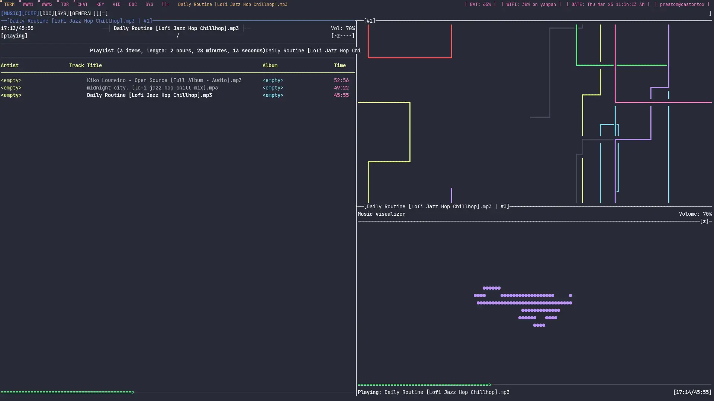

So, these are my gruvbox Dotfiles. The dotfile repository is unfinished at the moment because I accedentally deleted my home directory the other day, but you can still look at some of the images.
My dotfiles are currently running on trisquel GNU+Linux and they are currently being reproduced. However, if you want the current version, you can clone the repo. When I finish, I will update this post.
